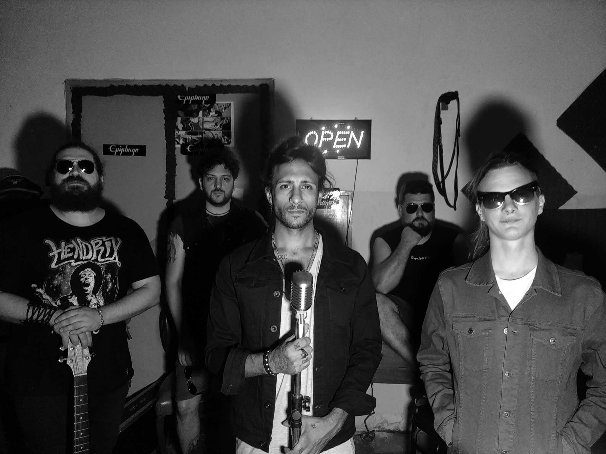

y que paso ?
Y QUE PASO? Rock, Pop, Funk son los estilos musicales que describen a Y QUE PASO?, la misma fue fundada por Maximo Bursese, quien es el compositor y creador las canciones, como las llaman, junto a Ariel Barreto, quien en su rol de cantante compositor y guitarrista hacen de este bandon algo increible... Rock, Pop, Funk son los estilos musicales que describen a Y QUE PASO?, la misma fue fundada por Maximo Bursese, quien es el compositor y creador las canciones, como las llaman, junto a Ariel Barreto, quien en su rol de cantante compositor y guitarrista hacen de este bandon algo increible........
